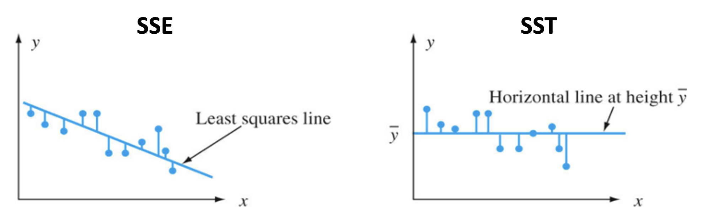

If we have a situation where \(r=18\) and \(p=0.03\), we can say that if \(H_0\) where \(\rho=0\) is true, then we will observe \(r=18\) 3% of the time. The \(p\)-value tells us how likely are we to get a value that is as extreme or more extreme than the observed one, given \(H_0\) is true.
Since \(p<0.05\), we can reject \(H_0\).
Spearman Correlation Coefficient
A Spearman correlation coefficient works if you suspect the variables are not normally distributed or not linear, for example.
Remember that Spearman correlations are simply Pearson correlations between ranked value of \(x\)’s and \(y\)’s. Thus, hypothesis tests will be essentially the same as hypothesis tests for Pearson’s \(r\).
Sample sizes
If we have very large samples, even very small correlation coefficients may be statistically significant. Inversely, if we have very small sample sizes, even very large correlation coefficients may be statistically significant.
Remember, the \(T\)-distribution largely depends on its \(n-1\) degrees of freedom.
Ordinary Least Squares Regression
A statistical method used to examine the relationship between a variable of interest (dependent variable) and one or more explanatory variables (predictors)
Strength of the relationship
Direction of the relationship (positive, negative, zero)
Goodness of model fit
OLS regression allows you to calculate the amount by which your dependent variable changes when a predictor variable changes by one unit (holding all other predictors constant)
Regression with one predictor is called simple regression
Regression with two+ predictors is called multiple regression.
Variable relationships
Two variables, \(x\) and \(y\), can be related to each other in two ways:
In a Deterministic relationship, i.e. \(y\) is some mathematical function of \(x\) (e.g. \(y=\text{log}(x+8)\), \(y=x^2\), \(y=4x+8\), etc.)
In a Non-Deterministic relationship, i.e. there is some general relationship between \(x\) and \(y\), by no formula that will enable you to calculate the precise value of \(y\) for \(x\).
SAT scores and college GPA
Crime rate and household income
Temperature in a room and comfort level
The simplest deterministic relationship
The simplest deterministic mathematical relationship between two variables \(x\) and \(y\) is a linear relationship \(y=mx+b\), which statisticians rewrite as \(y=\beta_0+\beta_1 x\).
The set of pairs \((x,y)\) for which the relationship determines a straight line with slope \(\beta_1\) and y-intercept \(\beta_0\)
The linear probabilistic model
For the deterministic model \(y=\beta_0 + \beta_1 x\), the actual observed value of \(y\) is a linear function \(x\). In a probabilistic model, we assume \(\mathbb{E}(y)\) is a linear function of \(x\), but for fixed \(x\), the variable \(y\) differs from \(\mathbb{E}(y)\) by a random amount \(\epsilon\).
The residual term \(\epsilon\)
The variable \(\epsilon\) is usually referred to as the residual or random error term in the model
Without \(\epsilon\), any observed pair \((x,y)\) would fall exactly on the line \(y=\beta_0 + \beta_1 x\) called the true (or population) regression line.
The inclusion of \(\epsilon\) allows \((x,y)\) to fall either above the true regression line (when \(\epsilon>0\) or below the line (when \(\epsilon<0\)).
The Simple Linear Regression Model
There are parameters \(\beta_0\), \(\beta_1\), and \(\sigma^2\) such that for any fixed value of the independent variable \(x\), the dependent variable \(y\) is related to \(x\) through the model equation:
Here, the quantity \(\epsilon\) is a random variable, which we call the residual, and which is assumed to be normally distributed, with \(\mathbb{E}(\epsilon)=0\) and \(V(\epsilon)=\sigma^2\). Said differently, \(\epsilon \sim \mathcal{N}(0, \sigma^2)\).
Implications of the Simple Regression Model
The mean value of \(y\) is a linear function of \(x\).
That is, the true regression line is the line of mean values.
The \(y\) value on the line at any \(x\) is \(\mathbb{E}(y)\) at that \(x\).
Least Squares Estimation
The way we calculate values for \(\beta_1\) and \(\beta_0\) involves minimizing the sum of squared vertical distances between the points and the estimated regression line.
The least squares estimate of the slope coefficient \(\beta_i\) of the true regression line can be represented as:
The parameter \(\sigma^2\) determines the amount of variability inherent in the regression model.
If \(\sigma^2\) is small, the pairs \((x_i, y_i)\) will fall very close to the the true line.
If \(\sigma^2\) is large, the pairs \((x_i, y_i)\) will be quite spread out about the true regression line.
Sum of Squared Errors (SSE)
The SSE is the quantity that the least squares method attempts to minimize. It measures the Its formula is:
\[\text{SSE}=\sum (y_i-\hat{y_i})^2\]
A lower SSE means your model’s predictions are very close to the actual data points, indicating a good fit.
Total Sum of Squares (SST)
A quantitative measure of the total amount of variation in observed \(y\) values is given by the total sum of squares (SST):
\[\text{SST}=\sum(y_i-\bar{y})^2\]
The SST is the sum of squared deviations about the sample mean of the observed \(y\) values – without regard to \(x\).

The Coefficient of Determination
If SSE is the amount of variance in \(y\) unexplained by the regression model and SST is the total amount of variance in \(y\), then SSE/SST is the proportion of total variance that is unexplained by the model.
Then:
\[1-\text{SSE/SST} = \text{SSR/SST} = R^2\]
\(R^2\) is called the coefficient of determination. It is the proportion of the observed variation in the dependent variable \(y\) that was explained by the model. Here, SSR is the regression sum of squares, and is calculated as \(\text{SSR=SST-SSE}\).
The higher the value of \(R^2\), the more successful the simple linear regression model is in explaining the variation in dependent variable \(y\). If \(R^2\) is small, then you would usually want to look for another model, which either includes alternative, additional, or transformed predictors.
Note that \(R^2\) is the square of \(r\), Pearson’s correlation coefficient!